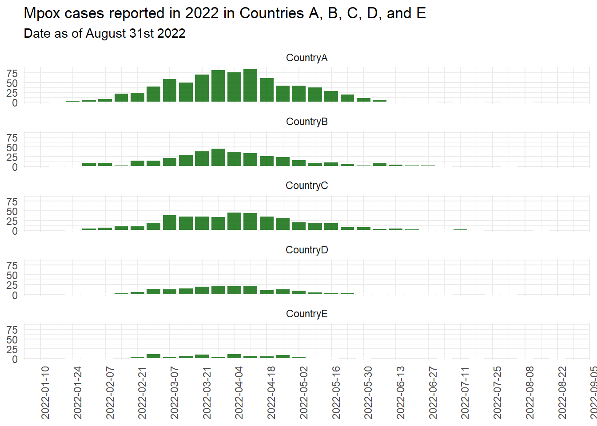

# Ensures the package "pacman" is installed
if (!require("pacman")) {
install.packages("pacman") }
# install (if necessary) from CRAN and load packages to be used
pacman::p_load(
rio, # importing data
skimr, # get overview of data
janitor, # data cleaning and tables
lubridate, # working with dates
epikit, # to create age categories
gtsummary, # summary statistics, tests and regressions
apyramid, # plotting age pyramids
tidyverse # data management and visualization
)Descriptive analysis of the 2022 Mpox outbreak in Europe
For instructions on how to use our case studies, see our How-to Guide. We welcome feedback and suggestions via contact@appliedepi.org. You can also discuss the case study or related concepts on the Applied Epi Community.
Scenario
It is May 2022 and Mpox has just been reported for the first time across 5 countries in Europe: Countries “A”, “B”, “C”, “D”, and “E”. You have been requested to provide a basic descriptive analysis to the European Centre for Disease Prevention and Control (ECDC).
You are given access to:
- A dataset with aggregate case counts, submitted to ECDC by the five countries as part of routine European reporting
- A linelist with cases, submitted by the five countries to ECDC for this particular analysis
Let’s go!
Objectives
In this case study you will:
- Explore different types of files and how they can be imported in R.
- Perform basic data cleaning, e.g., changing the variable type, recoding variables, aggregating and filtering.
- Perform a basic descriptive analysis using tables and graphs
Step 1. Set up
1.1 Get started in RStudio
Start by setting up a reproducible and well-organized workflow. This will make it easy to rerun your analysis whenever needed.
Tasks:
- Set up an RStudio project
- Set up clear sub-folders where your code, data, and outputs will go
- Create an R script, or an R Markdown file if you prefer. Make sure the script purpose, date, and author are written as comments at the top.
- Extra: Ensure your working language in RStudio is appropriate (e.g. English for this exercise)
Click to read a hint
Create a folder where all the work in this case study will go. For example, create ‘mpox_analysis’ on your computer desktop. Create your RStudio project to be based in this folder.
We suggest creating the following sub-folders:
scripts(for your code),data(for your data), andoutputs(for your analytical outputs).
Click to see a solution (try it yourself first!)
Create a folder (e.g. ‘mpox_analysis’ on your Desktop) for your work. To create an Rstudio project in your new folder, click New Project… in the top left of your R Studio, then Existing Directory, then Browse to select your new folder. For more information, look at the R projects section of the Epi R Handbook.
Start a new R script by clicking New File… in the top left of your R Studio, then R Script. Save it immediately in the appropriate place, e.g. in a ‘scripts’ subfolder of your R Project.
At the top of your new R script, write some essential information like your name, the purpose of the file, and the date.
Your R locale determines the language and regional settings used for things like date formats and translations. If your locale is different from the language you want for your report (e.g., a French locale vs. an English report), you can change it to English by running Sys.setlocale("LC_ALL", "English"). Include this in your script if needed, or skip it if your locale is usually appropriate. This is explained in more detail in the How-to Guide.
1.2 Install/load packages
Next in your R script, you need to install and load the necessary R packages. This ensures that the functions you need are available for your analysis.
You will need the following packages: rio (for importing data), janitor (for cleaning data), lubridate (for cleaning dates), skimr (for reviewing data), epikit (for epi-related tasks), gtsummary (for presentation-ready tables), apyramid (for age-sex pyramids), and tidyverse (for general data manipulation/science tasks).
As you start, your trusted colleague nudges you and whispers “I’ve heard that a great way to manage your packages is with the pacman package”.
Over to you!
Click to see a solution (try it yourself first!)
Use the function p_load() from pacman for this task. You provide the function with a list of packages that you want to use. It will take two steps per package: 1) Check if the package is installed on your computer, and install it if necessary, then 2) Load the package so it can be used during this R session.
If you don’t already have pacman installed, you will need to install it the “traditional way” first, with install.packages().
Note that the order of packages in your p_load function can be important. If two packages have the same function names (e.g. select() in the package MASS and select() in tidyverse, which do different things), then R will use the function from the most recently loaded package. To prioritize functions from tidyverse, which are commonly used for data manipulation and visualization, load tidyverse last.
Step 2: Download and import the data
2.1: Download the data
ECDC provides you with two files for your analysis, both updated as of 31st August 2022:
- A case-level linelist (“mpox_linelist.xlsx”) with case information from five countries (countries A - E)
- An aggregate table (“mpox_aggregate_table.csv”) for those countries with cumulative case counts per day.
They provide it to you via AppliedEpi’s very useful data repository, which you can access using the {appliedepidata} package. So first you need to download these two files to your own computer, as follows:
- Install the
{appliedepidata}package from GitHub using theinstall_github()function in the{remotes}package. Install{remotes}if you need to first.
# Install remotes if you need to (so you can install a package from GitHub)
pacman::p_load("remotes")
# Use the install_github function from remotes to install appliedepidata
remotes::install_github("appliedepi/appliedepidata")- Save the two datasets into a specific folder using the
save_data()function from{appliedepidata}, by running the code below. The example below saves the data into a ‘data’ subfolder within the RStudio project. Note that if you do not specify a location within the ‘path’ argument of the function, a window will pop up asking you to manually select a folder.
# Save down the two mpox files using the save_data() function from appliedepidata
appliedepidata::save_data("mpox_linelist",
path = "data")
appliedepidata::save_data("mpox_aggregate_table",
path = "data")2.2 Import the data
Great! Thanks ECDC and Applied Epi! Now it’s time to import the data from that folder into RStudio, so you can analyse it.
Task: Import the downloaded case-based and aggregated data into your R environment. Ideally you want to use one function for both datasets, despite one being a csv and the other an xlsx file.
Click to read a hint
Use the import function from the {rio} package, which can recognize and import different file types. It replaces importing functions that are specific to the file type, such as read.csv() from {base} for .csv files and read_excel() from {readxl} to import .xlsx files.
If you feel you need to know more about importing functions, read the Import and export chapter of the EpiRhandbook.
Click to see a solution (try it yourself first!)
Below we use the import function to bring in both files. Note how we are assigning the imported data to two objects, one called mpox_linelist_raw, and one called mpox_agg_raw. We add the ‘raw’ suffix to distinguish this data from the cleaned versions we will make later.
# Import data --------------
# Case-based data
mpox_linelist_raw <- import("data/mpox_linelist.xlsx")
# Aggregated data
mpox_agg_raw <- import("data/mpox_aggregate_table.csv")Step 3: Explore the data
The data’s in, and now it’s time to see what story it tells. Take an initial look at your data to check its quality and how you can best use it.
Tasks: Take a look at the different data frames and determine:
- The number of columns and observations (e.g. their dimensions)
- The class of their columns and whether it matches its nature (e.g., are “dates” considered “dates” by R?)
- If the contents of columns are clean and standardized in the mpox linelist (e.g. gender, clinical symptoms, outcome, hiv status and sexual orientation). Do you need to recode any of them?
- How unknown or missing data is categorized in these columns. Do these values need to be standardized?
Click to read a hint
An efficient function for initial data exploring is skim() from the {skimr} package, as it gives you a lot of information on data structure and content, including the classes of columns.
You can use the function tabyl() from {janitor}, to get counts and percentages of every category in the data column, one by one. These get printed to your RStudio console.
Also - we recommend just looking at the data itself! A good function for this is view(), a baseR function.
Click to see a solution (try it yourself first!)
Using the skim commands you can see the rows and columns of each dataset, and you can see how most of the columns in mpox_linelist_raw (including those containing dates) are character classes. (Results not shown on this exercise page)
# Explore the dimensions of the two data objects
skim(mpox_linelist_raw)
skim(mpox_agg_raw)Take a look at the overall data using view(). It will pop up in the Data Viewer tab and you will get a good sense of how clean the data is and what the missingness is like. This preview shows just 5 rows from the linelist data.
view(mpox_linelist_raw)Below is an example of using the tabyl() function from {janitor}, to look at the distribution of clinical symptoms. You can see 12 cases have missing clinical information and that many cases have a mix of symptoms.
tabyl(mpox_linelist_raw, HIVStatus) HIVStatus n percent valid_percent
NEG 525 0.2625 0.4107981
POS 307 0.1535 0.2402191
UNK 446 0.2230 0.3489828
<NA> 722 0.3610 NAYou can explore further columns one by one (results not shown):
# Explore the values of different categorical columns in the mpox linelist: with tabyl
tabyl(mpox_linelist_raw, Gender)
tabyl(mpox_linelist_raw, ClinicalSymptoms)
tabyl(mpox_linelist_raw, Outcome)
tabyl(mpox_linelist_raw, SexualOrientation)You could add extra arguments to tabyl() to customize the tables, such as adding totals and changing the proportions to percentages so they are easier to read. See the table on clinical symptoms below. But remember - this is just an initial look so don’t go too crazy.
tabyl(mpox_linelist_raw, ClinicalSymptoms) %>% # Tabulate symptoms
adorn_totals() %>% # Add totals to bottom of table
adorn_pct_formatting(digits = 2) # Format percentages ClinicalSymptoms n percent valid_percent
Lesions 14 0.70% 0.70%
Rash 257 12.85% 12.93%
Rash, Lesions 323 16.15% 16.25%
Rash, Systemic symptoms 676 33.80% 34.00%
Rash, Systemic symptoms, Lesions 654 32.70% 32.90%
Systemic symptoms 28 1.40% 1.41%
Systemic symptoms, Lesions 36 1.80% 1.81%
<NA> 12 0.60% -
Total 2000 100.00% 100.00%Finally, as an alternative approach to tabyl(), you could use tbl_summary() from the {gtsummary} package. We will describe this later.
Step 4: Clean the data
4.1: Clean the case-based data
So! The good news: you have information on geography, dates, demographic characteristics, and clinical details. A promising descriptive analysis lies ahead.
BUT! You may noticed that there are a few things to fix before the real detective work begins.
For example:
- Column names have capital letters. This isn’t outright a problem, but can lead to mistakes since R treats ColumnName and Columnname as different.
- Date columns are recognized as character classes, not dates, which would cause issues like incorrect ordering (alphabetical) in epicurves.
- Some columns have values that are unclear or unsuitable for presentation. For example gender is categorized with “F”, “M”, “O” and “UNK”. The column Outcome is “A” and “UNK”.
- Missing data is inconsistently handled, for instance with both “UNK” and NA in the HIV status column. R thinks “UNK” is a valid value, which it treats differently to true missing data (indicated by NA)
Tasks:
- Create a clean version of your case-based data making all cleaning changes in a single piping command
- Change all column names to lower case.
- Convert all date columns to class “Date”.
- Convert all missing/unknown values to NA (to be recognized by R as missing)
- Recode non-missing “Gender” categories into: “Female”, “Male”, and “Other”
- Recode non-misising HIV status into: “Positive”, “Negative” and “Unknown”
- Recode non-missing sexual orientation into: “Bisexual”, “Heterosexual”, and “MSM/homo or bisexual male”.
- Recode non-missing “outcome” categories into: “Alive” and “Dead”.
- Check that all changes have been made correctly
Click to read a hint
To convert all column names to lower case at once rather than renaming each column, use the function clean_names() from the {janitor} package.
Use {lubridate} functions to transform date columns into “Date” class. You can do this one by one, or you could do all at the same time using the across() function from {dplyr}. If you feel you need to know more about transforming dates read the chapter Working with Dates from the EpiRhandbook. If you are not sure how to use the across() function, you can also read the section on Transform multiple columns.
There are different functions that we can use to recode values. We propose three: The function recode() from {dplyr}, the function ifelse() from {base} and the function case_when() from {dplyr}. If you want to know more about these functions, look that the section on Re-code values from the EpiRhandbook.
Click to see a solution (try it yourself first!)
Here we clean the data using a ‘chain’ of commands connected by pipes (%>%), which is the grammar of the functions in the {Tidyverse}. The output is assigned to a new object called mpox_linelist to differentiate it from the raw data. It can be helpful to have both the cleaned and raw data available in the environment to compare to the original data if needed.
See the series of functions and the explanation in the comments.
# Create a new object called mpox_linelist which is the clean version of the raw data
mpox_linelist <- mpox_linelist_raw %>%
# standardises names and puts all into lower case
clean_names() %>%
#transform ONE column into date (note the column names are lower case now)
mutate(date_of_notification = ymd(date_of_notification)) %>%
#transforms ALL columns starting with "date" into dates
mutate(across(starts_with("date"),
.fns = ~ ymd(.x))) %>%
#transforms UNK to NA across all character columns
mutate(across(where(is.character),
.fns = ~ ifelse(.x %in% c("UNK", "Unknown"), NA_character_, .x))) %>%
# Recode the gender values to be more obvious
mutate(gender = recode(gender,
"F" = "Female",
"M" = "Male",
"O" = "Other")) %>%
#recode with ifelse to change only one or two categories based on a rule.
mutate(outcome = ifelse(outcome == "A", "Alive", outcome)) %>%
#recode with case_when for more complex recoding
mutate(hiv_status = case_when(hiv_status == "NEG" ~ "Negative",
hiv_status == "POS" ~ "Positive")) %>%
mutate(sexual_orientation = case_when(sexual_orientation == "BISEXUAL" ~ "Bisexual",
sexual_orientation == "HETERO" ~ "Heterosexual",
sexual_orientation == "MSM" ~ "MSM/homo or bisexual male")) You can then review your data by tabulating across all the different columns you have cleaned. See the preview of the HIV table below - it looks tidier now with more understandable categories, and all missing data is classified as ‘Unknown’.
# Check that all changes have been made correctly
skim(mpox_linelist)
tabyl(mpox_linelist, gender)
tabyl(mpox_linelist, clinical_symptoms)
tabyl(mpox_linelist, outcome)
tabyl(mpox_linelist, hiv_status)
tabyl(mpox_linelist, sexual_orientation) hiv_status n percent valid_percent
Negative 525 0.2625 0.6310096
Positive 307 0.1535 0.3689904
<NA> 1168 0.5840 NAIMPORTANT: If ‘unknown’ and NA had meaningful differences, combining them wouldn’t be appropriate (e.g., if ‘unknown’ meant the case was asked but didn’t want to respond, while NA meant they weren’t asked). Here, we assume no meaningful difference and want R to recognize them as missing.
4.2: Clean the aggregated data
In a similar way, clean the aggregated data by:
- Standardising names to lower case
- Ensuring that date of reporting is of class “Date”
- Creating a column called “week_date” with the week of reporting starting on Monday
Click to see a solution (try it yourself first!)
We can first check the class of the DateRep column, which shows us that it was already recognized as a date column on import.
# Check class of date of reporting column
class(mpox_agg_raw$DateRep)Then create a new object for the clean aggregate data, and write your cleaning coded connected with pipes.
# Create a new object called mpox_agg which is the clean version of the raw data, applying the cleaning functions
mpox_agg <- mpox_agg_raw %>%
# standardises names and puts all into lower case
clean_names() %>%
# create week column with Monday start
mutate(week_date = floor_date(date_rep,
unit = "week",
week_start = "Monday")) Step 5: Describe outbreak by person, place, and time
Now we’re getting to the heart of the investigation. Who is affected? Which locations are most affected, and how quickly is it spreading? Your ability to tell the classic “person, place, and time” story will be crucial to guiding the response. Pinpoint those hotspots and trends!
5.1: Describe total case counts by country
Task: Using the mpox case linelist, create a table showing the total number of cases by country. This time, make the table more publication-friendly.
Click to read a hint
You could use tabyl() like before, but an easy way to produce publication-ready tables is with the function tbl_summary() from {gtsummary} package. This formats the table for you. It will print to your Viewer rather than the console.
Click to see a solution (try it yourself first!)
Create a new object with the table output - as this is a key output that you can then integrate into a document later rather than just viewing for now.
# Create an object with the table
cb_country_table <- mpox_linelist %>%
#select the column that we want to use in the table
select(country) %>%
# create the table. No need to specify columns; it will tabulate all available columns (selected above)
tbl_summary()
# Print the table
cb_country_table| Characteristic | N = 2,0001 |
|---|---|
| country | |
| CountryA | 816 (41%) |
| CountryB | 391 (20%) |
| CountryC | 474 (24%) |
| CountryD | 217 (11%) |
| CountryE | 102 (5.1%) |
| 1 n (%) | |
5.2: Describe cases over time
Okay so Country A has the most cases in total based on most recent data. But how does that change look over time?
Tasks:
- Using the mpox case linelist, create an epicurve by week of notification
- Using the mpox case linelist, create an epicurve by week of notification to enable a comparison of trends by country.
- Using the mpox case linelist, create a heat plot with the number of cases by country and week of notification.
Click to read a hint
Prepare your data for the epicurve first. You can create a “week_date” column using the function floor_date() from {lubridate}. Take a look at the documentation to understand how it works and how to pick the starting day of the week.
To create the epicurve, you can use ggplot() and geom_bar(), which visualizes the number of rows within a group - e.g. number of cases per week. To compare trends in different countries, consider using the facet_wrap() function. If you are unsure on how ggplot() works, read the EpiRhandbook chapter on Epidemic curves.
To create a heatmap, you will need to create a table of counts by country and week of notification. You can do this using the functions group_by() and summarise() from {dplyr}. If you are unsure on how to do this, review the Grouping data chapter of the EpiRhandbook. Then, use the geom geom_tile() to create a heat plot. If you’re unsure on how to do this, read the EpiRhanbook section on Heat Plots
Click to see a solution (try it yourself first!)
Prepare your data by creating the new column using mutate() and floor_date():
mpox_linelist <- mpox_linelist %>%
# create week column with Monday start
mutate(week_date = floor_date(date_of_notification, unit = "week", week_start = "Monday")) The code below creates an epicurve using ggplot() and the geom_bar() function, then applies further formatting. With geom_bar(), you only need to specify the x axis, and the function will visualize the number of rows per unique x axis value.
# Open up the plot production with ggplot() function, specifying object and columns
epicurve_mpox <- ggplot(data = mpox_linelist,
aes(x = week_date)) +
geom_bar(fill="darkgreen", #colour inside the bins
color="white", #outline colour of the bins
alpha=0.8) + #transparency of the bins
scale_x_date(breaks = "2 weeks") + #set the x axis labels to two week intervals
labs(title="Mpox cases reported in 2022 in Countries A, B, C, D, and E",
subtitle = "Date as of August 31st 2022") + #add a title
theme_minimal() + #assign a predefined theme
theme(axis.text = element_text(size=9), #define the font size of the axis text
axis.title = element_blank(), #remove the titles of the x and y axis
axis.text.x = element_text(angle=90)) #rotate the x axis text
# Print the epicurve
epicurve_mpox
To examine how the outbreak spread by country, add facet_wrap() to your ggplot code. This splits the graph into multiple smaller ones. As shown below, you can even simply add the function to the national epicurve object.
An alternative approach would be to create a stacked epicurve, i.e. retain the single epicurve but split each bar into colors per country. You would do this by adding fill = country to the aes() in the epicurve code. However, we don’t recommend this for comparing trends, as stacked bars make it harder to see individual patterns.
epicurve_epox_country <- epicurve_mpox +
# Facet wrap to make mini-plots, specifying that you want two columns of plots.
facet_wrap(.~country,
ncol = 1)
# Print the epicurve
epicurve_epox_country
Finally, if you want to demonstrate this as a weekly heatmap, you can use geom_tile(). First, aggregate the data by week. Then pipe into a ggplot(), as shown below.
# Assign the output of your ggplot code to a new object
hp_mpox <- mpox_linelist %>%
#first count the number of cases by country and notification week
count(country, week_date) %>%
#you can pipe directly into the ggplot
ggplot(aes(x = week_date, # notification week along the x axis
y = country, # country along the y axis
fill = n)) + # colour in the heatmap tiles by number
# specify that you want this to be a heatmap with geom_tile()
geom_tile(colour = "black") + # black is the outline of each tile
#define the gradient of the colours
scale_fill_gradient(
low = "lightgreen",
high = "red") +
#set the x axis labels to two week intervals
scale_x_date(breaks = "2 weeks") +
# Add titles
labs(
title= "Mpox cases by country and week of notification",
fill = "Number of cases"
) +
# Apply an overall theme to your plot
theme_bw() +
# Customize other appearance details
theme(legend.position = "bottom", #legend position to bottom
axis.text = element_text(size=9), #define axis font
axis.title = element_blank(), #remove the axis titles
axis.text.x = element_text(angle=90)) #rotate the x axis text
# Print the heatmap
hp_mpox 5.3: Describe demographic characteristics
Next, describe the age, gender, and sexual orientation of cases. What is interesting?
Task:
- Create a single table showing overall distribution of age, gender, and sexual orientation
- Create an age-gender pyramid showing age as 10-year age bands
Click to read a hint
To quickly create a presentation-ready table showing the breakdowns for three different columns, consider using the function tbl_summary() from {gtsummary}.
To create an age-gender pyramid, first create a new column with the function age_categories() from the {epikit} package. Then explore the function age_pyramid() from the {apyramid} package.You can find more about this function in the EpiRhandbook chapter Demographic pyramids and Likert-scales
Click to see a solution (try it yourself first!)
See below the code to quickly generate one table with the breakdown of different variables. The function tbl_summary() by default summarizes columns differently depending on their class:
- Age is a numeric column, so is summarized with a median and interquartile range.
- Gender and sexual orientation are character values, so are described in terms of counts and percentages.
You can customize this further; explore the documentation by typing ?tbl_summary() in your console.
Note that tbl_summary() by default does not include NAs in the counts and percentages, allowing you to see the distribution of non-missing values.
# Create table of all three variables
tab_demographics <- mpox_linelist %>%
# select the columns of interest for
select(age, gender, sexual_orientation) %>%
# use tbl_summary() to create the table
tbl_summary()
tab_demographics| Characteristic | N = 2,0001 |
|---|---|
| age | 37 (31, 45) |
| Unknown | 3 |
| gender | |
| Female | 36 (1.8%) |
| Male | 1,960 (98%) |
| Other | 1 (<0.1%) |
| Unknown | 3 |
| sexual_orientation | |
| Bisexual | 7 (0.8%) |
| Heterosexual | 46 (5.2%) |
| MSM/homo or bisexual male | 833 (94%) |
| Unknown | 1,114 |
| 1 Median (IQR); n (%) | |
Create the new age group column as follows. You can add this to the cleaning section of your script (which we covered 4.1).
mpox_linelist <- mpox_linelist %>%
# Use the age_categories function to create age categories
mutate(age_group = age_categories(age, lower = 0, #set up the lower age
upper = 70, #set up the upper age
by = 10)) #set up the age breaksThen make the age-gender pyramid using the age_pyramid() function. It is a function that builds on ggplot, so you can then continue to add on customization, such as the theme_bw() below.
# Create table of all three variables
figure_agesex <- mpox_linelist %>%
# Filter to male and female only
filter(gender %in% c("Male", "Female")) %>%
# select the columns of interest for
age_pyramid(age_group = "age_group",
split_by = "gender") +
# change theme
theme_bw()
figure_agesex5.4: Describe clinical characteristics
The media is starting to call your office and are asking what symptoms the public should look out for. Just in luck - you can check that out in the data too!
Tasks:
- Create a table with the distribution of different symptoms and outcomes.
No hints! You should know this one by now!
Click to see a solution (try it yourself first!)
# Table with number and percentage of cases by outcome
tab_outcome <- mpox_linelist %>%
# Select the columns for tabulation
select(outcome, clinical_symptoms) %>%
# Use tbl_summary() - note that this time we are adding on labels to change how the column name is displayed
tbl_summary(label = list(
clinical_symptoms = "Symptoms",
outcome = "Reported outcome"))
tab_outcome| Characteristic | N = 2,0001 |
|---|---|
| Reported outcome | |
| Alive | 1,405 (100%) |
| Unknown | 595 |
| Symptoms | |
| Lesions | 14 (0.7%) |
| Rash | 257 (13%) |
| Rash, Lesions | 323 (16%) |
| Rash, Systemic symptoms | 676 (34%) |
| Rash, Systemic symptoms, Lesions | 654 (33%) |
| Systemic symptoms | 28 (1.4%) |
| Systemic symptoms, Lesions | 36 (1.8%) |
| Unknown | 12 |
| 1 n (%) | |
Step 6: Reviewing data quality
You’ve described a lot now, but you want to make sure you understand how timely and complete your mpox linelist is, especially if it will be the basis of making decisions.
For example - is it possible that there are very different reporting delays between countries, meaning current case counts are not directly comparable? Oh dear, must check.
6.1: Delay between date of onset, diagnosis and notification
Tasks
Calculate median time from symptom onset to diagnosis and from diagnosis to notification, both overall and by country
Assess visually the number of cases by calendar period and type of date (onset, diagnosis and notification)
Click to read a hint
To plot together the different dates you may need to transform your data from “wide” to “long” form. What we call “pivoting” in R. The objective is to have a column with the different date categories (onset, diagnosis and notification) and another column with their date value. If you are unsure on how to do this, have a look at the Pivoting data chapter of the EpiRhandbook. Then, try to plot with the daily values, but if that’s not easy to interpret you may want to aggregate cases by week.
Click to see a solution (try it yourself first!)
First create the required columns for this analysis.
# Create two columns in linelist to assess delays
delay_db <- mpox_linelist %>%
# Time between onset and diagnosis (converted to a number)
mutate(delay_diag = as.numeric(date_of_diagnosis - date_of_onset)) %>%
# Time between diagnosis and notification (converted to a number)
mutate(delay_not = as.numeric(date_of_notification - date_of_diagnosis)) Use the summary function from base R to quickly view the median, mean, interquartile range, and rang.
# Summarize the delays to diagnosis
summary(delay_db$delay_diag) Min. 1st Qu. Median Mean 3rd Qu. Max. NA's
-2.000 4.000 7.000 7.758 10.000 66.000 897 # Summarize the delays from diagnosis to notification
summary(delay_db$delay_not) Min. 1st Qu. Median Mean 3rd Qu. Max. NA's
-46.0000 -2.0000 0.0000 -0.6078 1.0000 23.0000 715 Use group_by() and summarize() to create a table with median delays per country.
delay_country <- delay_db %>%
# Group by country
group_by(country) %>%
# Create columns for each delay
summarise(median_delay_diag = median(delay_diag, na.rm = T),
median_delay_not = median(delay_not, na.rm = T))
delay_country# A tibble: 5 × 3
country median_delay_diag median_delay_not
<chr> <dbl> <dbl>
1 CountryA 7 0
2 CountryB 7 0
3 CountryC 6 0
4 CountryD 7 0
5 CountryE 6 0To explore how the trends in cases over time differ when using different dates, you can reshape the linelist to create a dataset with one row per date type per case.
# Prepare the data
dates_longer <- mpox_linelist %>%
select(age, gender, sexual_orientation, starts_with("date_")) %>%
pivot_longer(
# all columns starting with "date_" will be pivoted from wide to long
cols=starts_with("date_"),
# put names of the columns into a single column called "indicator"
names_to = "indicator",
# the date values will be placed in a column called "date"
values_to = "date") The data will then look like this, with three rows per case:
Then tabulate cases by week per indicator
# Create new object
dates_longer_week <- dates_longer %>%
# Create a new week column
mutate(week_date = floor_date(date, unit = "week", week_start = "Monday")) %>%
# Within each combination of indicator and week, calculate the number of cases
group_by(indicator, week_date) %>%
summarise(n=n()) %>%
# drop the cases with no data on dates
drop_na(week_date) The data will then look like this, with three rows per case:
Finally, create a plot with ggplot() and geom_line().
plot_date_delay <- ggplot(data = dates_longer_week,
aes(x = week_date,
y = n,
color=indicator)) +
geom_line(linewidth = 1.5) +
scale_x_date(breaks = "2 weeks")+
theme_bw() +
theme(legend.position = "bottom",
axis.text = element_text(size=9),
axis.title = element_blank(),
axis.text.x = element_text(angle=90),
legend.title = element_blank()) +
labs(title="Mpox cases reported in 2022, by date of onset, diagnosis and notification.")
plot_date_delay6.2: Compare case-based and aggregated data
Finally, you remember that all-along you’ve had these aggregate counts from routine surveillance. You find out that these numbers are actually already being published.
Before you share your own numbers, you’d better check how different they are from already-published statistics!
Task: Create a plot comparing the number of cases reported to through the case-based flow and through the aggregated flow in each country.
NOTE: Take into consideration that the column on cases in the aggregated data frame reports the cumulative number of cases.
Click to see a solution (try it yourself first!)
First, create a data frame of country totals from the aggregate data.
mpox_agg_country <- mpox_agg %>%
# as we have cumulative data, we keep only the last week per country
group_by(country) %>%
filter(date_rep == max(date_rep)) %>%
# remove unnecessary columns
select(-date_rep, -week_date) %>%
# create this column to distinguish the numbers from the linelist data
mutate(source = "aggregated") Then create a data frame of country totals from the case linelist, and append it to the totals from the aggregate data.
mpox_linelist_country <- mpox_linelist %>%
# count cases by country, use the same column name as in the aggregate data
group_by(country) %>%
summarise(cases = n()) %>%
# create this column to distinguish the numbers from the linelist data
mutate(source = "case_based")
# Append both data frames. Remember this is different from merging
total_data <- bind_rows(mpox_linelist_country, mpox_agg_country)You can now use this data to compare the cases reported in both sources, using ggplot().
graph_comp <- ggplot(data = total_data,
aes(x = source,
y = cases,
fill = source)) +
#position dodge puts bars one next to each other, instead of "stacked"
geom_col(position = "dodge") +
# this command gives us one graph per country. The argument scales allows each y axis scales to adjust to the data
facet_wrap(~ country, scales = "free_y") +
# changes the colours, but with the argument "labels" we can change the text of each fill.
scale_fill_viridis_d(
labels = c("Aggregated", "Case-based")) +
labs(
title = "Number of cases of Mpox reported in 2022 according to source of data",
fill = "Source",
x = "",
y = "Total number of cases"
) +
theme_bw() +
# we remove the text of the x axis because it is already present in the legend
theme(axis.text.x = element_blank(),
# we also remove the ticks for aesthetic purposes
axis.ticks.x = element_blank())
graph_compInteresting! There are some differences - and this probably will be worth flagging with stakeholders and/or explaining in a footnote somewhere.
Final thoughts
Well done! Through your analysis you now understand the magnitude of the outbreak so far, where and when it spread, which demographic groups are most affected, and how the disease actually manifests in terms of symptoms and severity. ECDC is very happy with your work.
By coding this up in R, this analysis should be reproducible, meaning you can quickly update it with new data and keep monitoring the outbreak.
Of course, the above data is not real. If you want to see a paper on the actual outbreak that occured in Europe in 2022, you can take a look at this Eurosurveillance paper. This ECDC page on Mpox also publishes updates on the status of mpox in Europe.
To further practise reproducible reports, [link to RMarkdown].
Case study information
Authorship
Original authors: Xanthi Andrianou, Gianfranco Spiteri (ECDC EI Group)
Data source: Fictional data provided by ECDC EI Group for training purposes
| Date | Changes made | Version | Author |
|---|---|---|---|
| October 2021 | First draft | 1 | Xanthi Andrianou |
| June 2024 | Adapted to case study template | 1.1 | Alberto Mateo Urdiales |
| September 2024 | Revise for case study repository | 1.2 | Paula Blomquist and Alanah Jansen |
Terms of Use
Disclaimer: The information presented in this exercise and the associated data files have been deliberately changed so as to facilitate the acquisition of the learning objectives for fellows of EPIET, EUPHEM and EPIET-associated programmes. This case study was first introduced in 2022 (see Copyright and Licence agreement for more information).
You are free:
- to Share: to copy and distribute the work
- to Remix: to adapt and build upon the material
Under the following conditions:
Attribution: You must attribute the work in the manner specified by the author or licensor (but not in any way that suggests that they endorse you or your use of the work). The best way to do this is to keep as it is the list of contributors: sources, authors and reviewers.
Share Alike: If you alter, transform, or build upon this work, you may distribute the resulting work only under the same or similar license to this one. Your changes must be documented. Under that condition, you are allowed to add your name to the list of contributors.
Notification: If you use the work in the manner specified by the author or licensor, Walter@rki.de
You cannot sell this work alone but you can use it as part of a teaching.
With the understanding that:
Waiver: Any of the above conditions can be waived if you get permission from the copyright holder.
Public Domain: Where the work or any of its elements is in the public domain under applicable law, that status is in no way affected by the license.
Other Rights: In no way are any of the following rights affected by the license:
Your fair dealing or fair use rights, or other applicable copyright exceptions and limitations;
The author’s moral rights;
Rights other persons may have either in the work itself or in how the work is used, such as publicity or privacy rights.
Notice: For any reuse or distribution, you must make clear to others the license terms of this work by keeping together this work and the current license.
This licence is based on http://creativecommons.org/licenses/by-sa/3.0/